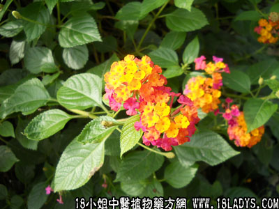

别名：五色梅、臭花、臭金凤、臭花草、五色花、五代同堂。
植物名：马缨丹。
生长环境：本品为有刺小灌木。生于村庄附近、村中空地、公路旁或栽培作篱笆等。
分布：广东以中部地区，尤其以广州附近、海南海口较多，原产美洲热带地区。
入药部分：根。
采集期：全年采根、叶。
自采地点：市郊外荒地。
性味：性凉、味淡。
功能：清内热、除痰火、解毒。
主治、用量和用法：1、久热不退：干根1至2两，清水煎服；2、痰火颈疬：用法同上，或加猪瘦肉同煎；3、痄腮：用法同上。
验方：（治痰火核方）如意草根1两、五爪龙根1来那个、风栗壳1两、白花灯笼根5钱、清水四碗煎成一碗服。
（方解）如意草根降火除痰。独用治痰火核已有效，亦可与五爪龙、风栗壳、白花灯笼根配伍，因该三药亦为治痰火核常用之药，合而用之，疗效更佳。
（方歌）降火除痰如意根，五龙风栗白花灯，痰火核成红肿痛，痰除火降患不生。
附录：（叶）祛风止痒、消肿止痛。主治：1、眼热：生用2两，清水煎服；2、皮肤湿毒：生用适量，煎水外洗；3、跌打：生用适量，擂烂加酒煮热外敷。